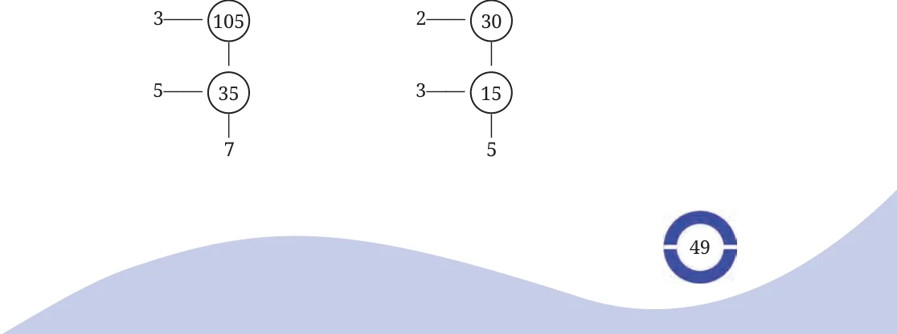
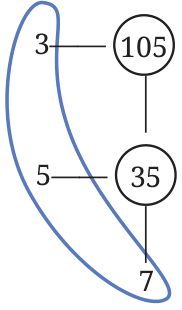
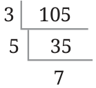
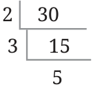

Can you see what is happening below?

Each circled number is the product of the numbers that are to its left and below. For example, \(30 = 2 \times 15\), \(15 = 3 \times 5\). Each time, a composite number is factorised so that, at least one factor is prime. We stop when we reach a prime number. Can you write the prime factorisation of 105 and 30 using these two figures? We collect the prime factors along the left and the one at the bottom. We then construct the prime factorisation as shown in the figure. While carrying out factorisation, the circles are usually left out and the steps are carried out in this format:



\(105 = 3 \times 5 \times 7\)
Let us call this method the division method. Try finding the prime factorisation of 1200 using the method above. If we had used the earlier method, our calculation would have been as follows:
\(1200 = 40 \times 30 = 5 \times 8 \times 5 \times 6 =\) …
Which calculation is easier to carry out?